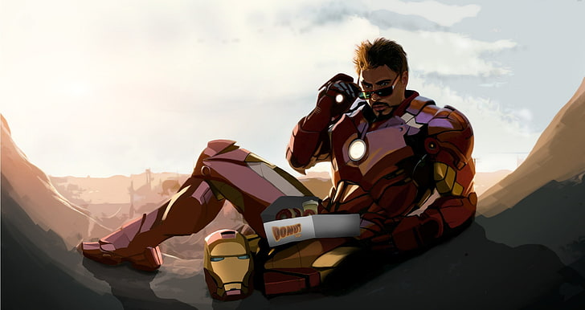

The beginning
Iron Man's Marvel Comics premiere in Tales of Suspense #39 (cover dated March 1963) was a collaboration among editor and story-plotter Stan Lee, scripter Larry Lieber, story-artist Don Heck, and cover-artist and character-designer Jack Kirby. In 1963, Lee had been toying with the idea of a businessman superhero. He wanted to create the "quintessential capitalist", a character that would go against the spirit of the times and Marvel's readership. Lee said,
I think I gave myself a dare. It was the height of the Cold War. The readers, the young readers, if there was one thing they hated, it was war, it was the military ... So I got a hero who represented that to the hundredth degree. He was a weapons manufacturer, he was providing weapons for the Army, he was rich, he was an industrialist ... I thought it would be fun to take the kind of character that nobody would like, none of our readers would like, and shove him down their throats and make them like him ... And he became very popular.
Origin
Anthony Edward Stark is the son of wealthy industrialist and head of Stark Industries, Howard Stark, and Maria Stark. A boy genius, he enters MIT at the age of 15 to study engineering and later receives master's degrees in engineering and physics. After his parents are killed in a car accident, he inherits his father's company. Stark is injured by a booby trap and captured by enemy forces led by Wong-Chu. Wong-Chu orders Stark to build weapons, but Stark's injuries are dire and shrapnel is moving towards his heart. His fellow prisoner, Ho Yinsen, a Nobel Prize-winning physicist whose work Stark had greatly admired during college, constructs a magnetic chest plate to keep the shrapnel from reaching Stark's heart. In secret, Stark and Yinsen use the workshop to design and construct a suit of powered armor, which Stark uses to escape. During the escape attempt, Yinsen sacrifices his life to save Stark's by distracting the enemy as Stark recharges. Stark takes revenge on his kidnappers and rejoins the American forces, on his way meeting a wounded American Marine fighter pilot, James "Rhodey" Rhodes. Back home, Stark discovers that the shrapnel fragment lodged in his chest cannot be removed without killing him, and he is forced to wear the armor's chestplate beneath his clothes to act as a regulator for his heart. He must recharge the chestplate every day or else risk the shrapnel killing him. The cover story that Stark tells the news media and general public is that Iron Man is his robotic personal bodyguard, and corporate mascot. To that end, Iron Man fights threats to his company (e.g., Communist opponents Black Widow, the Crimson Dynamo, and the Titanium Man), as well as independent villains like the Mandarin (who becomes his greatest enemy). No one suspects Stark of being Iron Man, as he cultivates a strong public image of being a rich playboy and industrialist. Two notable members of the series' supporting cast, at this point, are his personal chauffeur Harold "Happy" Hogan, and secretary Virginia "Pepper" Potts—to both of whom he eventually reveals his dual identity. Meanwhile, James Rhodes finds his own niche as Stark's personal pilot, ultimately revealing himself to be a man of extraordinary skill and daring in his own right. The series took an anti-Communist stance in its early years, which was softened as public (and therefore, presumably, reader) opposition rose to the Vietnam War. This change evolved in a series of storylines featuring Stark reconsidering his political opinions, and the morality of manufacturing weapons for the U.S. military. Stark shows himself to be occasionally arrogant, and willing to act unethically in order to 'let the ends justify the means'. This leads to personal conflicts with the people around him, both in his civilian and superhero identities. Stark uses his vast personal fortune not only to outfit his own armor, but also to develop weapons for S.H.I.E.L.D.; other technologies (e.g., Quinjets used by the Avengers); and the image inducers used by the X-Men. Eventually, Stark's heart condition is resolved with an artificial heart transplant.